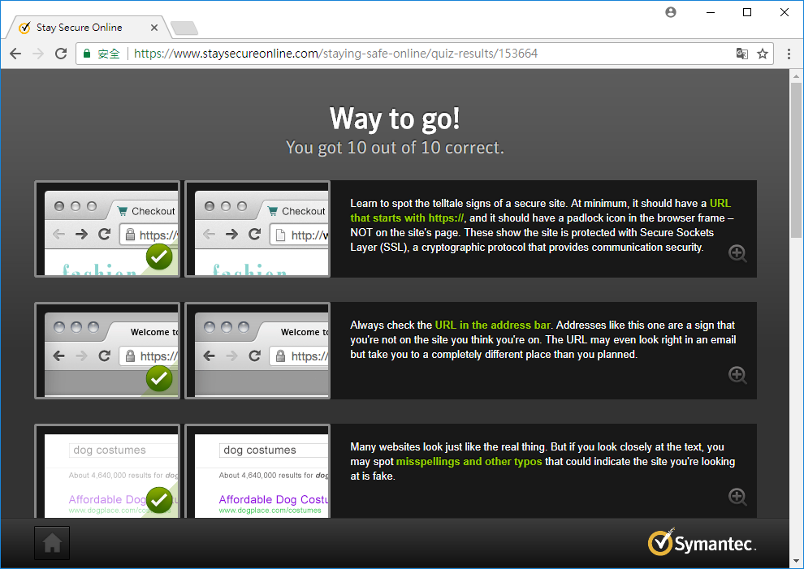
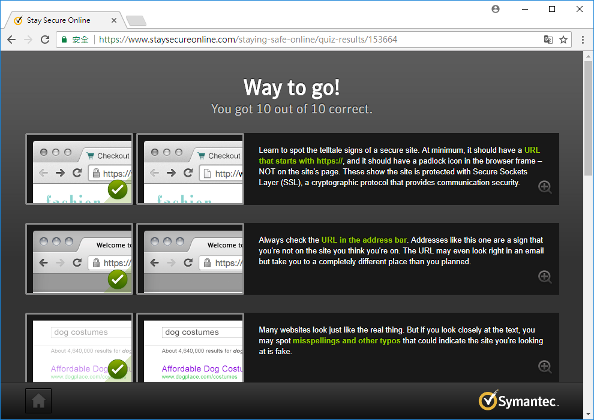

https練習
先看過下列有關於https的文章
HTTP 必死：先知 Google 呼籲大家升級 HTTPS， 網頁瀏覽更有保障HTTP 和 HTTPS：差了一個「S」，攸關的可是你家網站 SEO 排名順序！
再到下列網頁進行測驗
Symantec Stay-Safe-Online testing以下是我的測驗結果
先看過下列有關於https的文章
HTTP 必死：先知 Google 呼籲大家升級 HTTPS， 網頁瀏覽更有保障再到下列網頁進行測驗
Symantec Stay-Safe-Online testing以下是我的測驗結果
